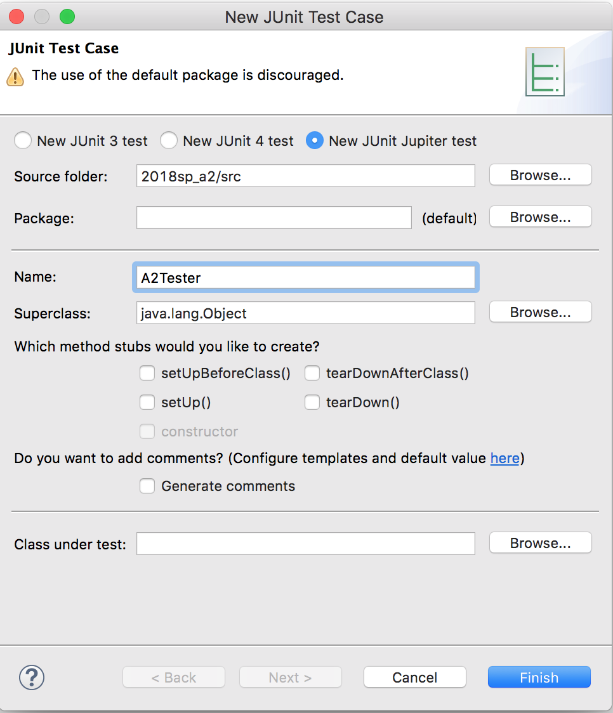

Creating a JUnit testing class
Here's how to create a JUnit testing class:
1. Select the src folder for the project in the Package Explorer pane.
2. Use menu item File --> New --> JUnit Testing Class.
3. The window that opens looks like the image below. Type in a name for the class, something like A2Tester, if the class whose methods are to be tested is named A2.
4. You may have a choice of JUnit version. You want JUnit Jupiter test, as shown in the image below; this may also be called JUnit 5. Don't use the older JUnit 3 or JUnit 4 versions.
5. Click Finish.
6. If a window opens that says, "JUnit ... is not on build path. Do you want to add it?", then click the OK button. Library JUnit 5 must be on the build path or the JUnit testing class will not work.
The new class is then placed in the src directory and is opened in the Eclipse editing pane.
You see in the image below that you can fill in a Package name (or it may be filled in if the class is going into a package). If you want it the JUnit class in the default package, be sure that the Pacakge: field is empty! Also, the Name of the file may be filled in automatically. For CS2110, you don't have to be concerned with other fields in this window.
